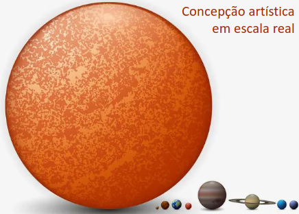
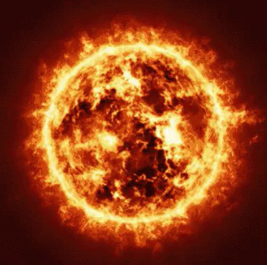
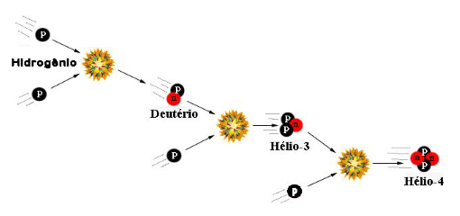

O Sol é a fonte de energia do nosso planeta. Todos os
processos naturais, biológicos e físicos na Terra só ocorrem
graças à energia produzida por ele.
É a estrela mais próxima da Terra e é responsável por manter todo
Sistema Solar em sua interação gravitacional.
Estima-se que o Sol tem
aproximadamente entre 4,6 e 5
bilhões de anos.
Consome 4 milhões de toneladas
de sua massa por segundo e tem
mais de 330 mil vezes a massa da
Terra.

O Sol é composto por 74% de hidrogênio, 24% de hélio e os demais 2%
principalmente de oxigênio, carbono e ferro.
Núcleo
Seu núcleo representa 25% de sua massa
total e é onde ocorre a fusão nuclear. Nele,
a temperatura é de 15 milhões de Kelvin.

Zona Radiativa
Onde a radiação produzida pelo núcleo é
refletida várias vezes e leva milhares de
anos para escapar.
FUSÃO NUCLEAR DO SOL
Em seu núcleo, o Sol converte átomos de hidrogênio em
átomos de hélio e energia.
A cada fusão nuclear
libera-se aproximadamente
6,8 MeV de energia, que
representa 0,7% da massa
dos átomos de hidrogênio
envolvidos.
